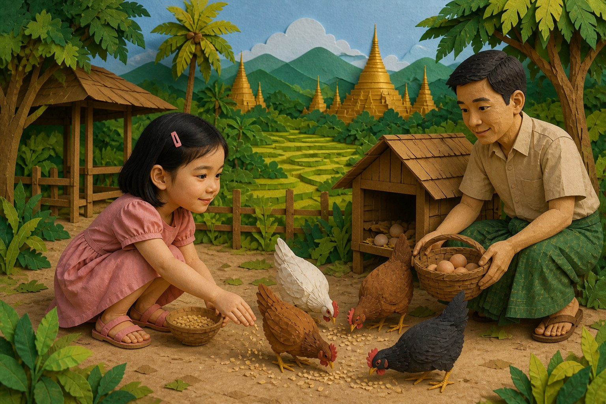
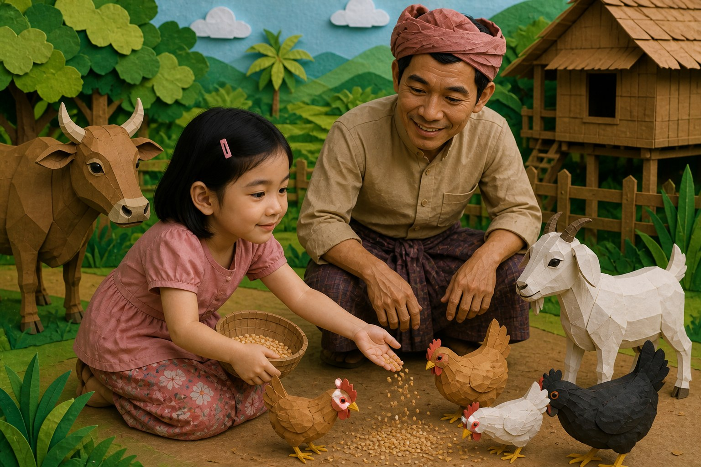
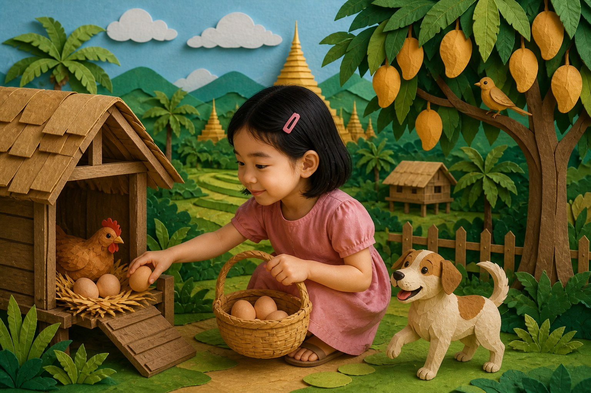

Soft Hands, Warm Eggs

Early one morning, Grandma took Mudra along the narrow path to the farm. The path was lined with grass and bright flowers, and the air felt cool and clean. Cows stood in the shade. A goat nibbled near the fence. Everything seemed to be moving gently, as though the farm were breathing in the early light. Mudra loved the way the land looked so alive and patient, as if it had been waiting for her to come and notice its quiet beauty.
At the edge of the field, the rice plants shimmered like green water. Mudra could hear insects singing beneath the leaves. She had seen fields in pictures before, but now she could smell the earth and feel the dampness of the morning ground beneath her shoes. The farm felt less like a place on a map and more like a living story unfolding step by step.
Mudra met the farm animals one by one, and each one seemed to have a different personality. The cow watched her with large, calm eyes. The goat tilted its head and made a small sound that made Mudra laugh. A little boy from the next farm was also there, and together they tried to feed the animals with grass. Their laughter floated across the field, and even the animals seemed to join in. Mudra felt delighted by the simple freedom of being outdoors, unhurried, and playful.
She began to understand that farm life was not only work. It was rhythm, movement, and companionship. The animals were part of the family’s daily life, and the people around them moved with care and trust. Mudra could sense that the farm taught patience in the same way that the city had taught speed.
When the work began, Mudra was given a small basket and a simple task. She picked up fallen stalks, carried them carefully, and tried to help without making a mess. Her hands were small, but she was eager. Grandma smiled and told her that even small efforts mattered. The workers laughed kindly when she tried too hard, and soon she was moving with them in a quiet, shared rhythm. She learned that harvest time was not only about gathering crops. It was about teamwork, gratitude, and the pride of contributing.
At the end of the morning, Mudra sat under a tree with dusty shoes and a tired smile. She had been muddy, laughing, and helpful all at once. The farm had shown her that strength could be gentle, and that joy often grew from honest work done together.

"Soft hands," Uncle said. "Gentle." Mudra scattered grain carefully. She did not chase. She did not shout. When Uncle showed her the nest boxes, she collected warm eggs one by one into a basket lined with cloth. Each egg felt like a small promise.
Mudra named everything aloud — chicken, egg, cow, goat, dog, bird, hay, farm — mixing English and the Myanmar sounds Grandma had practiced with her. Uncle clapped once. "The animals trust a quiet voice."

By noon the basket was full. Mudra's arms ached in a proud way. Walking back, she imagined Grandma's smile. Helping the farm was not a game only. It was work that fed the family table.
Grandma did smile. "Tonight we cook with your farm eggs." Mudra stood taller. Belonging, she realized, could feel like warm eggs in a basket and soft hands that chose kindness.
Many Myanmar children help feed chickens and collect eggs. Gentle hands matter for animals and people.